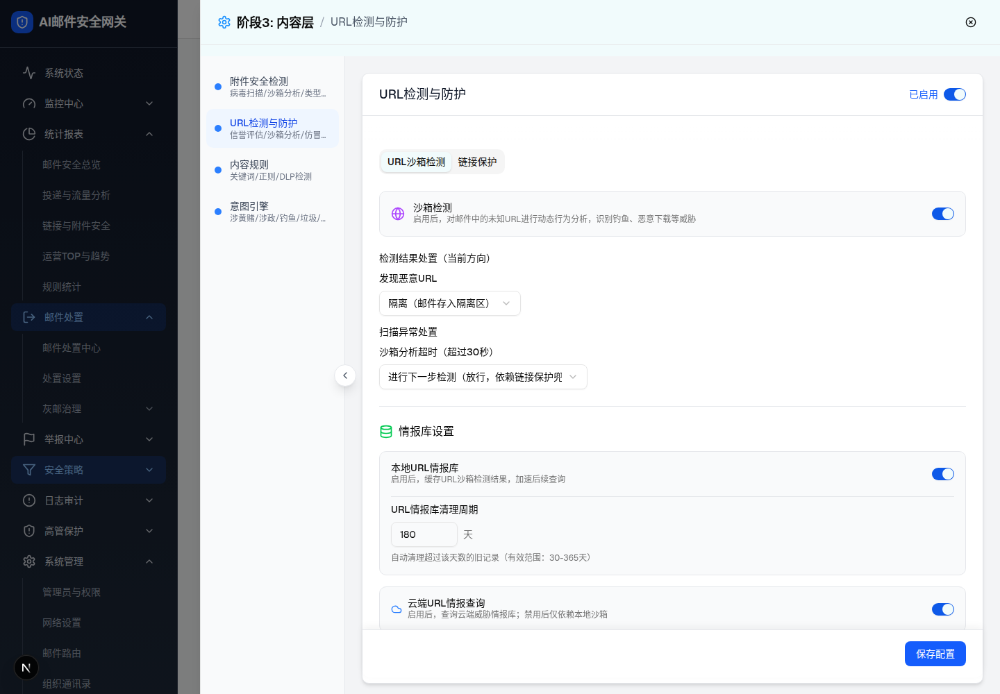
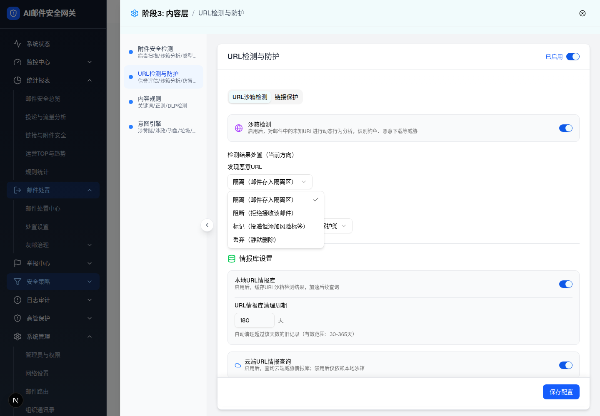
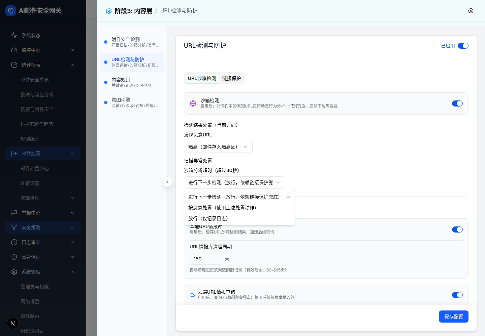

| 所属组件 | 2.3 URL沙箱检测 Tab（SandboxTab，url-protection-module.tsx） |
| 触发路径 | 传统版形态（?profile=legacy-single，capabilities.ai=false）打开 URL检测与防护 抽屉 → 默认选中"URL沙箱检测"Tab |
| 浏览器验证 | 抽屉节点数 126；Tab [URL沙箱检测 active, 链接保护 inactive]；开关 4 个（总开关/沙箱/本地情报库/云端）均 checked；下拉 2 个；数字输入 value=180 min=30 max=365 |
| 截图 | screenshots/sandbox-tab-default.png、sandbox-malicious-select-open.png、sandbox-timeout-select-open.png |



| 区域 | 元素 | 默认值 | 可选值 / 校验 | 交互行为 |
|---|---|---|---|---|
| Tab 条 | URL沙箱检测 / 链接保护 | 沙箱 active（传统版） | - | 点击切换；链接保护详见层级3 |
| 沙箱开关区 | 沙箱检测 Switch + Globe 紫色图标 | 开 | - | 关闭 → 处置两块置灰（见层级2） |
| 检测结果处置 | 发现恶意URL Select | 隔离（邮件存入隔离区）——receive 方向默认；send/internal 默认阻断（源码，UI 不可达） | 隔离 / 阻断（拒绝接收该邮件）/ 标记（投递但添加风险标签）/ 丢弃（静默删除） | 展开 listbox，选中收起；映射 maliciousAction: isolate|block|mark|discard |
| 扫描异常处置 | 沙箱分析超时 Select（w-[300px]） | 进行下一步检测（放行，依赖链接保护兜底） | 进行下一步检测 / 按恶意处置（使用上述处置动作）/ 放行（仅记录日志） | 映射 timeoutAction: continue|treat_malicious|pass |
| 情报库设置 | 标题 + Database 绿色图标 | - | - | 分组标题，无交互 |
| 本地情报库 | Switch + 清理周期数字输入 | 开；180 天 | 30-365；非法值红框报错（见层级2） | 关闭隐藏清理周期块；localIntelEnabled / intelCleanupDays |
| 云端情报 | 云端URL情报查询 Switch + Cloud 蓝色图标 | 开 | - | cloudIntelEnabled；无子配置 |
| 比对项 | demo 实际 DOM | 提取的 HTML 预览 | 是否一致 |
|---|---|---|---|
| Tab 列表 | [role=tab] ×2：URL沙箱检测 data-state=active、链接保护 inactive | tab.active URL沙箱检测 + tab 链接保护 | 一致 |
| 活动面板节点数 | tabpanel 63 节点；label 9 个（沙箱检测/检测结果处置（当前方向）/发现恶意URL/扫描异常处置/沙箱分析超时（超过30秒）/情报库设置/本地URL情报库/URL情报库清理周期/云端URL情报查询） | 预览保留全部 9 个分组/字段标签 | 一致（结构裁剪展示） |
| 图标 | lucide-globe（紫）、lucide-chevron-down ×2、lucide-database（绿）、lucide-cloud（蓝） | emoji 等价替代 + chev 符号 | 一致（视觉等价，图标库以 demo 为准） |
| 开关 | button[role=switch] ×4 全 checked（总开关/沙箱/本地情报库/云端） | 本层预览含沙箱/本地/云端 3 个 toggle（总开关在主文件 2.2） | 一致 |
| 下拉触发器 | button[role=combobox] ×2，文本"隔离（邮件存入隔离区）"/"进行下一步检测（放行，依赖链接保护兜底）" | 同文本；超时触发器 300px 截断 | 一致 |
| 恶意URL选项 | [role=option] ×4，隔离项 checked | 4 选项 + 勾选态 | 一致 |
| 超时选项 | [role=option] ×3，进行下一步检测 checked | 3 选项 + 勾选态 | 一致 |
| 数字输入 | input[type=number] value=180 min=30 max=365 class 含 w-24 | num-input 同属性 | 一致 |